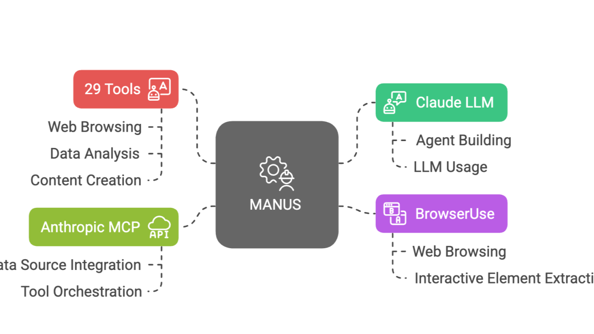
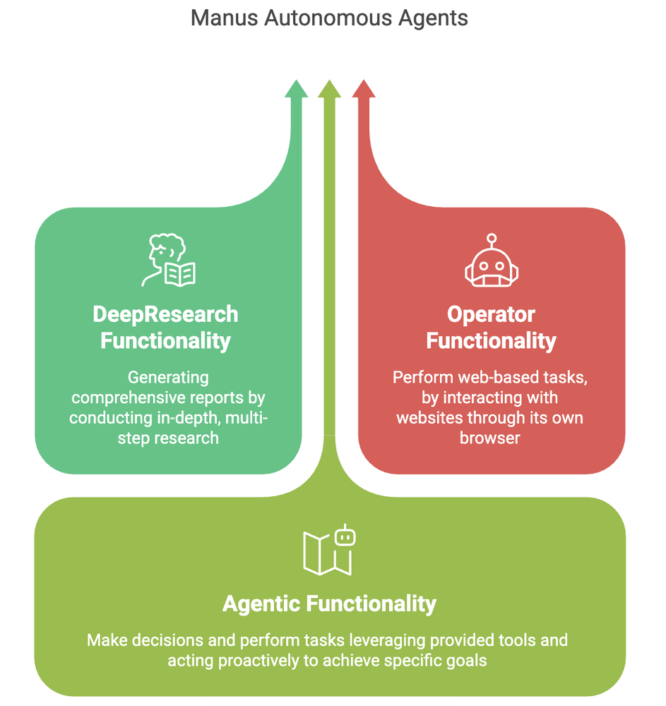
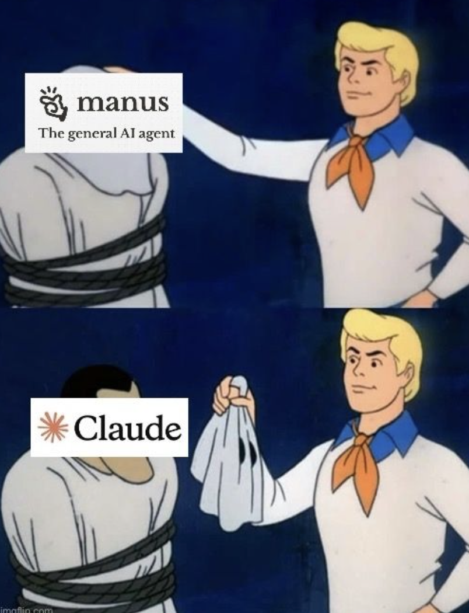
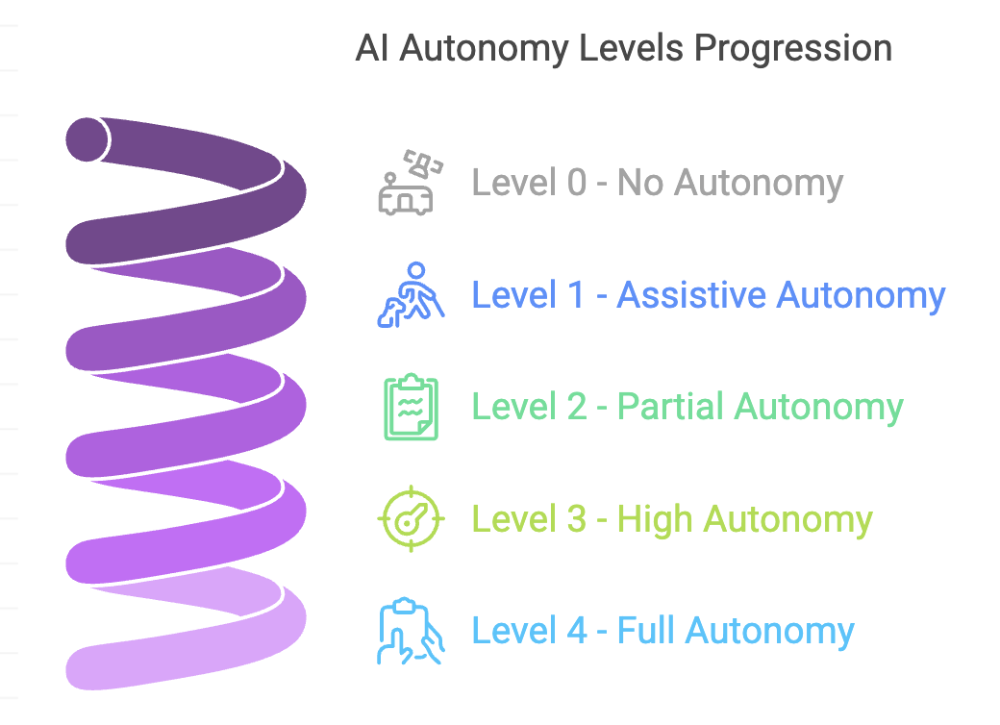
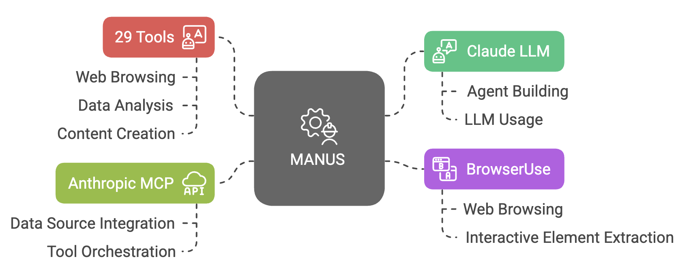
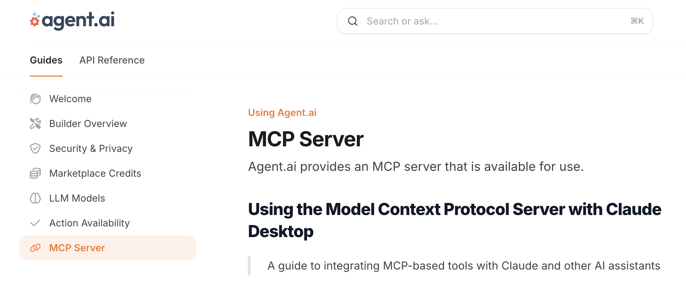

Autonomous Agents - A Multipart Series about Manus, Anthropic MCP and other related technologies is sponsored by Agent.ai - Discover, connect with and hire AI agents to do useful things.
The world of AI changes weekly and last week, for a hot second it looked like there was going to be a second DeepSeek moment. A Chinese AI firm had come up with something disruptive. To be fair what they came up with was disruptive but not DeepSeek disruptive.
The innovation they came up with was that they combined DeepResearch functionality with Operator functionality with Agentic functionality all in one package to build a general AI agent, that can act autonomously on a wide range of tasks.

Here is a link to their website and you can check out their demos. It will make you sit up, take notice and make you understand what the hype was all about.
As people got access to Manus and started looking under the covers, what stood out was that they had built all this functionality using Claude and this meme started trending. That being said, if you want a write up on Manus, check out this post.

With this long preamble, I'll get to the "It all started with Manus" title of this post. When I heard that Manus was built leveraging Claude, Anthropic's MCP, BrowserUse and 29 tools, it got me thinking -
Could I build a poor man's Manus? Could I build an autonomous agent too - not in production but at least to test the concept? The goal would be to give the agent instructions and see if it could do the research, create a plan and then take some action.
I have always been sceptic about Autonomous agents, especially in a business context, but like with all things AI, I have learned to be open to changing my opinion if new data shows up and this was going to give me the opportunity to update my knowledge and possibly my opinion.
When it comes to agents, I do believe there are levels of autonomy, like with self driving cars and there is a need for agents at all levels of autonomy. Most agents I build are what I would call Assistive or Partial Autonomy agents. I still have to define the steps, I have to tell it what actions to take but sometimes I can give it some leeway to take action. That being said, I have always felt strongly that High and Full autonomy are going to take a while.
That being said, those following the LLM vendors know that AGI and Fully Autonomous agents are the holy grail. I was very curious if this journey would help me change my opinion.

Coming back to building a poor man's Manus - I have been building agents for about a year and what I read gave me confidence that I could do something similar and even if it did not work, I would learn a lot.
So I looked at each component -

Of all these components, the one component that I did not know much about was Anthropic MCP. The rest I understood. So guess how excited I was when I saw this as I was looking through Agent.ai's documentation.

Once I saw this, I realized I had no excuse for not going down this journey of building a poor man's Manus. I had all the pieces and all I had to do was put them together and experiment.
The rest of this series will be me sharing my learnings as I went from knowing nothing about MCP to building autonomous agents that generate a DISC profile from someone's LinkedIn data, creating a Miro board, adding records to a Monday.com board all by just using a prompt (the autonomous agent piece). I will share what I see as pros and cons of this approach and how I see myself using this in practical client situations. I have already shared a few videos on LinkedIn that show a DISC profile being generated, a Miro board being created and a Monday board being updated, for those who are interested.
The reason I chose Miro.com and Monday.com was because I had tried to build an agent on Agent.ai to do this but gave up once I saw their complicated APIs. Also, if I wanted to do something remotely in the realm of what Manus had done, I needed an agent that would take action. Not just an agent that would do research. Eventually my goal is to also leverage Browser Operator functionality and see how that can help in my agent building.
What I will leave you with is that if you have got this far in the newsletter and you have not built an agent, you might want to get started. This is the future and it is wild!!